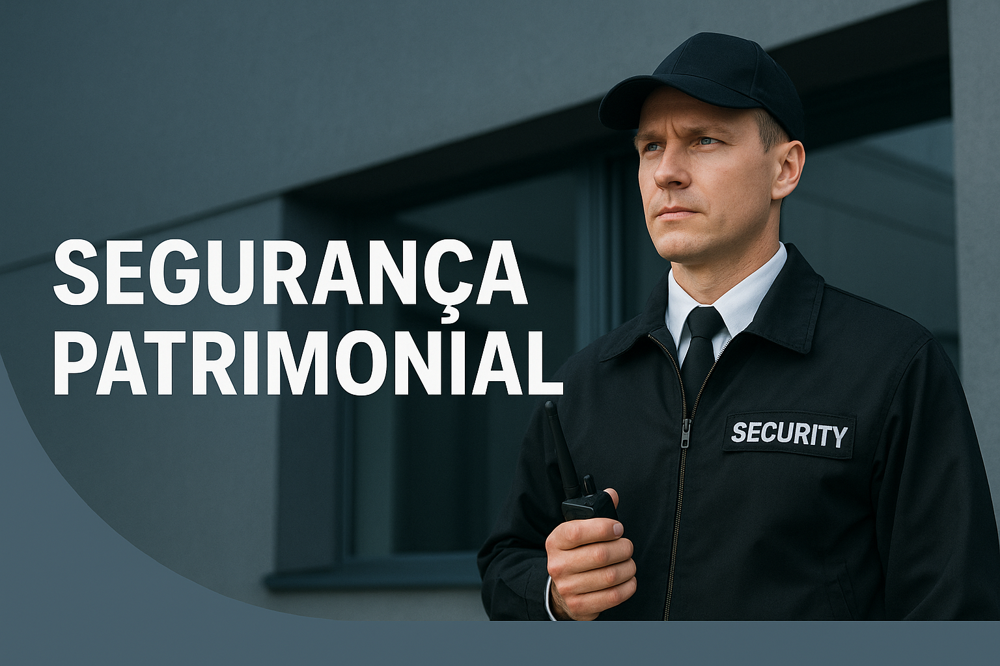
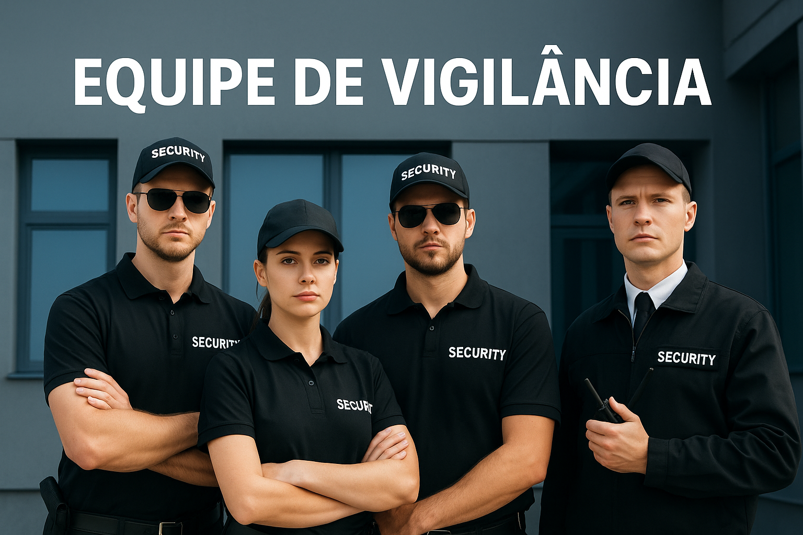

Serviço de Segurança Patrimonial
O serviço de Segurança Patrimonial da Front Security é a escolha ideal para quem busca proteção contínua e de alta qualidade para empresas, condomínios, indústrias, shoppings e residências de alto padrão.
O que oferecemos?
Nossos profissionais são treinados e capacitados para proteger pessoas e patrimônios com postura, disciplina e técnicas operacionais que garantem a eficiência do serviço. Trabalhamos com foco em:
- Prevenção de furtos e vandalismos
- Controle de acesso de pessoas e veículos
- Monitoramento de áreas externas e internas
- Rondas periódicas preventivas
- Relatórios operacionais diários
- Pronta resposta em situações de risco
Diferenciais da Front Security
Não somos apenas uma equipe de vigilantes. Somos especialistas em segurança inteligente, atuando com:
- Treinamento constante de nossos profissionais
- Supervisão 24 horas com equipes de apoio
- Uso de tecnologia para registro e controle
- Planos personalizados conforme o porte e risco da operação
- Relatórios digitais com histórico das atividades
Por que contratar nossa segurança?
Contar com a Segurança Patrimonial da Front Security é proteger o que realmente importa. Nosso compromisso é agir de forma preventiva e inteligente, minimizando riscos e garantindo a tranquilidade dos nossos clientes.
Solicite agora seu orçamento
Entre em contato com a nossa equipe comercial e solicite uma proposta personalizada para o seu negócio. Oferecemos atendimento em toda a região, com visitas técnicas para diagnóstico e elaboração do plano ideal para você.
Solicitar Orçamento no WhatsApp